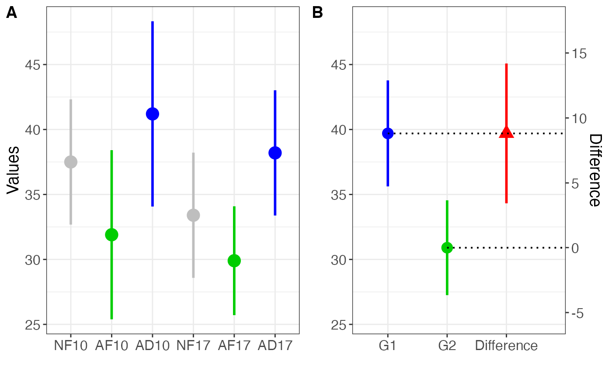

It plots all the samples with their confidence intervals (CI), and in addition it plots the contrasts between the selected samples.
NewStats_contrasts( dat, g1, g2, conf.level = 0.95, col.g1 = "blue", col.g2 = "green3", col.diff = "red", ylab = "Values", ylab.diff = "Difference", B.labels = c("G1", "G2", "Difference") )
| dat | Data frame of the samples with mean, standard deviation, sample size, and sample id |
|---|---|
| g1 | Samples for group 1 |
| g2 | Samples for group 2 |
| conf.level | Confidence level for the interval (Default is 0.95) |
| col.g1 | Color to use for group 1 |
| col.g2 | Color to use for group 2 |
| col.diff | Color to use for the difference |
| ylab | Label for the y-axis |
| ylab.diff | Label for the secondary y-axis for the difference |
| B.labels | Labels to use for plot B of the difference between groups |
A ggplot object
Cumming, G. & Calin-Jageman, R.J. (2017). Introduction to the New Statistics: Estimation, Open Science, and Beyond. New York: Routledge.
dat = data.frame(mean = c(37.5,31.9,41.2,33.4,29.9,38.2), sd = c(10,13.5,14.8,10,8.7,10), n = c(19,19,19,19,19,19), grp = c('NF10','AF10','AD10','NF17','AF17','AD17')) NewStats_contrasts(dat, g1 = c('AD10', 'AD17'), g2 = c('AF10', 'AF17'))